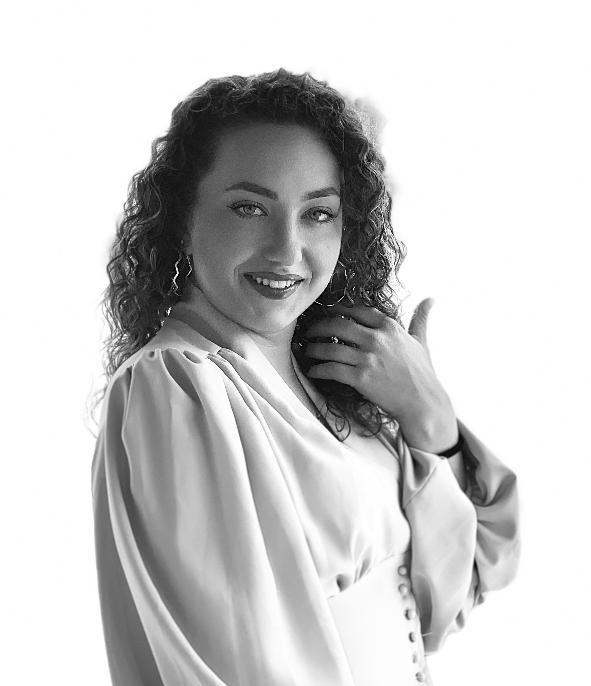

КРАТКА БИОГРАФИЈА
Анастасија Крстаноска е родена на 19 август 2001 во Струга. Средно и основно образование завршува во Струга. Во септември 2020 се запишува на ФИНКИ во Скопје, на студиска програма Примена на информациски технологии. Љубовта кон компјутерите ја има од најмала возраст, започнала од хоби и денес тоа води кон идна професија. Покрај љубовта кон компјутерите, Анастасија има хоби да патува. Анастасија е позитивна и храбра личност, која превзема секаков предизвик за остварување на своите желби и цели.